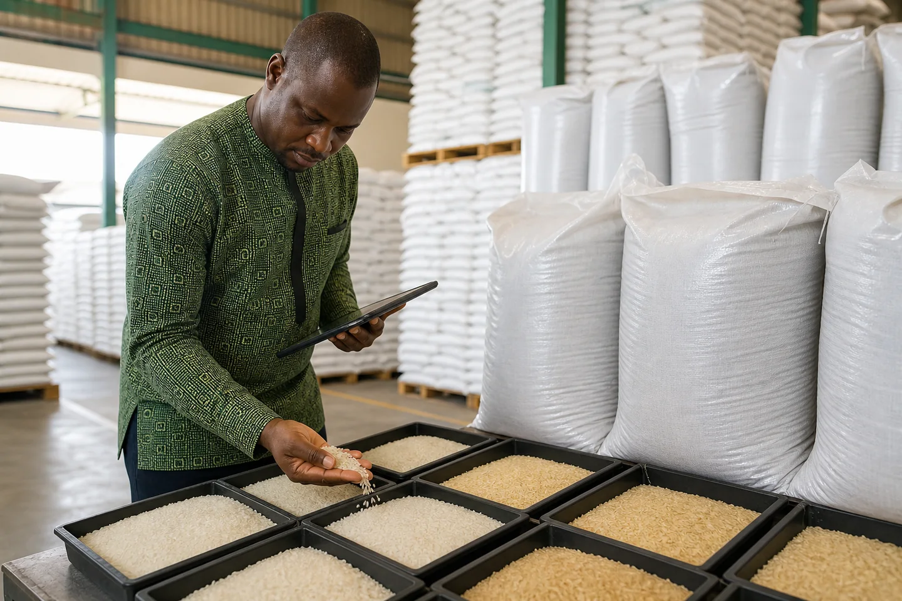

Arroz parboilizado IR-64: Por que domina a África Ocidental

JFT Agro Editorial • Ir64 Rice Inspection For African Markets
Este artigo foi movido para um guia relacionado verificado.
Continuar para o artigo